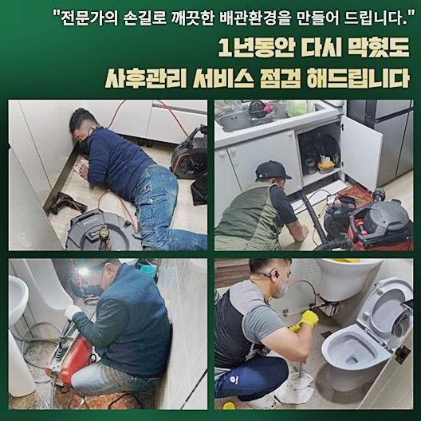
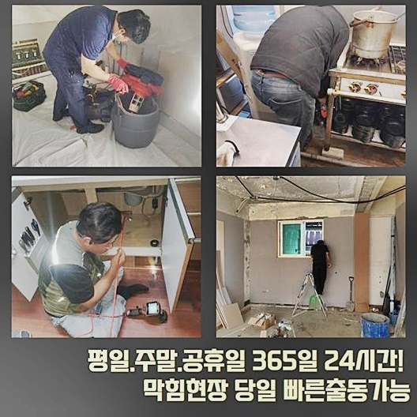
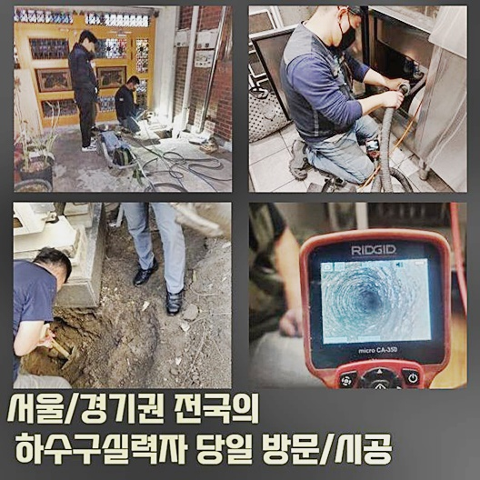
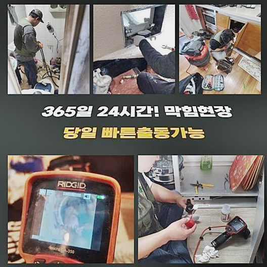
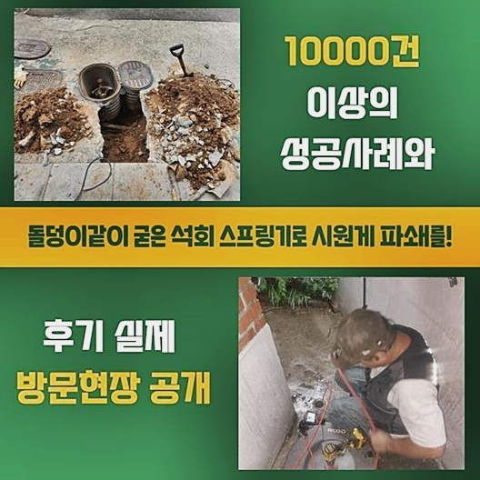

🏠 이천 대포동욕실역류 마장면 집수정청소 누수공사
용인 하수구막힘 전문 시공 후기

📋 작업 개요
- 위치: 용인
- 서비스 유형: 하수구막힘, 배관막힘, 집수정막힘, 누수수리, 역류해결, 뚫는업체, 배관청소, 고압세척, 설비공사
- 작업 일시: 2024. 8. 3. 6:23
- 업체명: 하수구수사대 (010-5615-2118)
🔍 문제 상황
이천 대포동욕실역류 마장면 집수정청소 누수공사
가벼운 막히는 문제들이 아닌때에는 배수로를 꼼꼼하게 들여봐야될 사안일 수 있는데요
피부에 와 닿는 증상들이 안보여도 쌓이게된 이물은 부피가 늘어나 심각한 심화된 피해들로 탈바꿈 하게 됩니다
집합건물 등에 거처를 마련한 경우라면 막히게 되는 문제들로 의도치않게 이웃주민에게 악영향을 끼칠 수 있어서 약간일지라도 이상이 있을땐 조속하게 연유를 파헤쳐야 해요
그 이유는 통수오류의 경우 심화되면 역류들이 발생한다거나 누수증세가 야기될 가능성이 높아서 수습하는것을 조속히 행하면 파생된 문제를 피할 수 있어요
그렇기에 배관 관련 지식이 뛰어난 시각에서 신속히 도움 요청을 반복하여 안내하는 내막도 이러하기에 그렇습니다
상당인원들이 사는 건축물이라면 배수관이 뒤엉켜있어서 다양한 구간으로 오수가 이동하게됩니다
안내할 사례의 경우 상업시설들과 주택이 혼재되어있는 건축물서 야기되었어요
상업시설까지 혼재되어 있는 경우면 배수시설이 다발적인 경우들이 많습니다
금일 내방했던 고객님댁은 무난했던 모습이였습니다
이러한 건물의 안쪽에서도 거주지에서 배수장애가 나타났다고 하여 그곳으로 이동했습니다
당도하여 둘러보았더니 다행으로 아래의 시설은 문제가 보이지 않았고 아래공간은 화장실공간으로 즉각 진단했죠

🔎 원인 분석
💡 전문가 진단: 정밀 진단 장비를 사용하여 슬러지의 고착 여부를 판명하고 타격/세척 작업을 실시했습니다.
천장쪽에 자리한 점검입구를 개방시키니 다양한 관로 중에서 큼지막한 관로의 형태가 보였어요
들여보고나니 하수라인에 구멍을 뚫는 자국이 있었습니다
장기간에 걸쳐 꾸준히 문제들이 발생되어 수리를 실시하지않았나 판단할 수 있었어요
구조문제로 때때로 증상이 생기건다거나 왜 막히는지에 대해서 밝혀지지를 못해서 꾸준히 증상이 발생되는데요
이와같은 것을 안 뒤 위쪽의 공간으로 당도해 곧장 배관의 모습을 살필 생각이였는데요
관찰결과 지금은 막힘이 심하여 내시경기기가 투입될 수 없는 상태였어요
이때에는 석션장치로 이물을 흡입한 뒤 내시경도구를 써주는데요
석션장비를 배수로에 밀착시킨뒤 강하게 오수를 빼내었는데 혹시나했지만 거의 하수들이였고 소량의 잔재만 빠지게되었어요
증상들을 관찰하려면 내시경장치를 사용해 문제의 원인을 체크하는것이 우선입니다
어디에서 막힘이 생겨난것인지 왜 역류증상들이 나타나게된건지 주시하면서 살피니 살피고있는 위층이 아닌 아래의 천장서 접근해나가 문제들을 시정해나가는것이 원활해보였습니다
관찰을하고서 이와같이 뚫는 지점을 변경해주며 수리를 이어갑니다 상황에 따라 건축물의 안에서 막혔어도 바깥에 존재하는 하수도에서 점검을 하기도 해요
증세를 풀어내주기위한 이상적인 작업공간을 찾는것도 전문업체의 실력이라 볼 수 있겠습니다
상황 파악 후 밑으로 자리를 옮겨로 이동해서 막힘을 해결하기위한 준비에 착수했어요

🔧 작업 과정
배수관을 고쳐내기 위해서 이용한 장치는 스케일링 장비라고 불리는 기기인데요
대다수의 현장들에서 대부분 쓰고있는 기기로서 부유물들을 타격하여 세척까지 진행시킵니다
샤프트장치를 사용하여 흡착물을 타격했습니다
금일의 장소에서는 보통과 다르게 하수도의 구경도 넓었고 잔해물들도 많았기에 샤프트만으론 충분한 이물이 제거될 수 없다는걸 파악했는데요
오늘의 해결을 위해 고압노즐방식이 실시되야겠다는 생각을 했죠
강한 물을 뿜어 세척들을 이어가야 올바른 방향으로 풀어낼 수 있었는데요
내부 배수길이 안보일만큼 여기저기 뻗어있는 상태였어요
예상한 바로는 타 전문진은 석션을 통한 흡입과 샤프트제거를 목적으로한 단계들만 실시하고서 철수한 걸로 보여졌죠
때문에 약간의 기간동안엔 배수되었겠으나 물막힘이 지속적으로 반복되고 좀처럼 하수라인이 제기능을 하기 어려운 상태로 보여졌습니다
저희업체가 문제들을 반드시 해결하리라 마음먹었기에 문제없이 문제들을 시정하고자 했습니다
샤프트장비말고 힘이 좋은 크란즐장비를 준비하여 작업을 이행해보았어요
사실 고압수청소가 작업 시 강한 수압들로 작업을 하기에 안전성을 잘 갖춰야합니다
문제에 맞는 방식들을 이어가지 않을 시 해결이 이루어지지 않아서 다시금 안타깝게도 동일문제 발생으로 부메랑처럼 날아오죠
그러므로 고객분도 며칠을 간격으로 막혀버리는 쳇바퀴에서 벗어나고자 저희업체께 문제를 맡기신건데요
청소를 진행할땐 그저 심각한 부분들만 손보는 것이 아닌 시발점을 빈틈없이 고쳐내서 통수 길이 확보되도록 깨끗히 점검을 할 예정이에요
타 전문가가 다녀와서 타공해놓은 위치에 크란즐장비를 삽입했고 내부 세척을 실시해주었어요
그렇지않아도 가정의 경우였으므로 관로의 지름이 크질 않아 해당 과정이 어려운 상황에 부딪혔는데요 하지만 작업에 몰두하여 나머지 작업들을 이행했습니다
물리성이 뛰어난 청수가 발사되며 배수관을 원상복구 시켜주었고 모든 부분에서 완벽하게 뚫어냈는데요
고압 이물제거를 하여 물들이 배출될 때 약간의 걸림돌들이 보이지않을만큼 깨끗히 시공까지 완료했어요
끝으로 물빠짐 확인까지 진행하여 하수구막힘 작업을 끝냈습니다


✅ 작업 완료
일반적으로 세대에서는 고압세척점검을 실시하는 때는 드뭅니다 배수관의 컨디션을 파악하고 고압세척 과정이 요구된다는 결론을 내리고 제대로 뚫어드렸는데요
주기적으로 문제가 생길만큼의 기름때가 어마어마하여 시공들을 마치고 나니 저희업체도 후련했습니다
상황에따라 구조라던지 여타 조건이 다르기에 쓰이는 전문기계나 작업수순도 적절하게 대비해야해요
저희의경우 과거에 진행했던 노하우들을 초고로하여 재발 걱정 안할 수 있는 작업으로 문제의 하수도를 뚫고있습니다
의뢰자의 시간들이 낭비되는 일 없게 저희가 돕겠습니다


⚠️ 베란다 누수 및 방수 관리 방법
- ✅ 비가 많이 올 때 창틀 주변이나 아래층 천장에 얼룩이 생기는지 정기적으로 확인해 보세요.
- ✅ 우수관 주변 실리콘 마감이 들뜨거나 깨진 틈새가 있는지 손상 여부를 수시로 체크하세요.
- ✅ 베란다 바닥 타일의 줄눈(메지)이 소실되면 그 틈으로 물이 침투하여 누수가 유발됩니다.
- ✅ 누수 의심 증상 발견 시 방치하면 아래층 손실이 커지므로 즉시 전문가의 진단을 받으십시오.
💡 핵심 정리
- 확실한 장비 작업(내시경 점검 및 샤프트 스케일링)으로 원인을 뿌리 뽑습니다.
- 작업 후 1년 이내에 동일한 부위 재발 시 100% 무상 A/S 서비스를 보장합니다.
- 서울 · 경기 · 인천 전 지역에 24시간 언제든 긴급 출동할 수 있도록 항시 대기 중입니다.
❓ 자주 묻는 질문 (FAQ)
🚨 용인 하수구막힘 문제로 고민이신가요?
정확한 원인 진단과 확실한 시공으로 재발 없는 해결을 약속드립니다.
24시간 긴급 출동 | 서울 · 경기 · 인천 전지역 | 1년 내 재발 시 무상 A/S